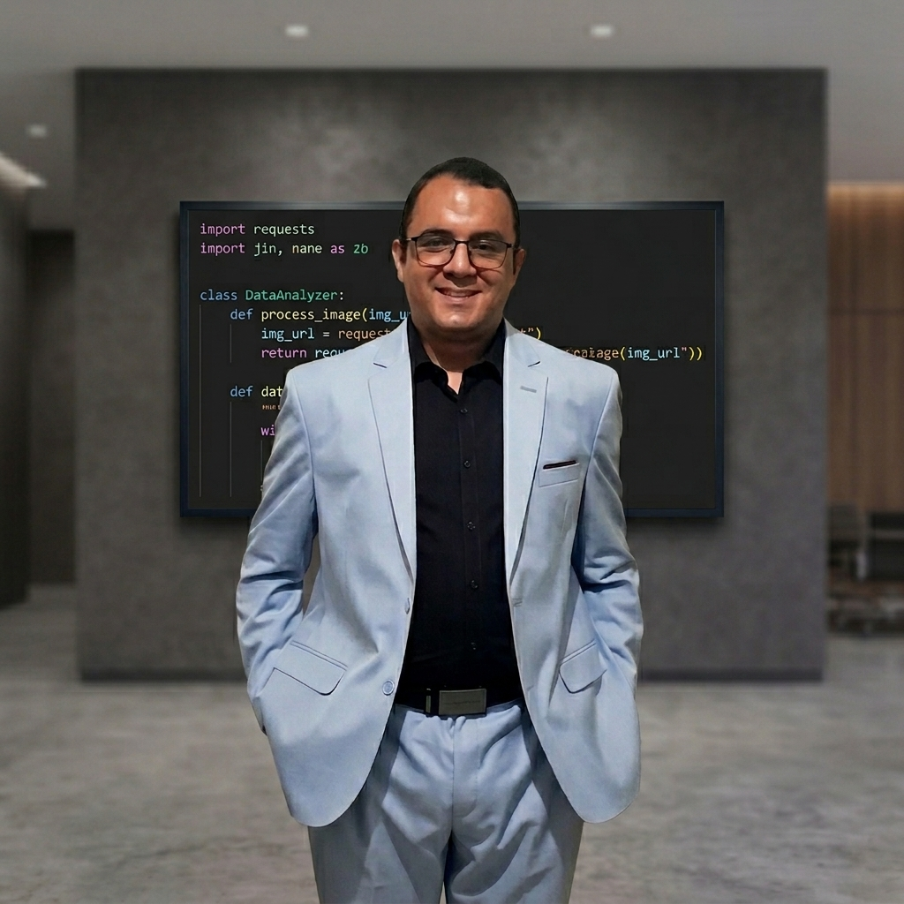
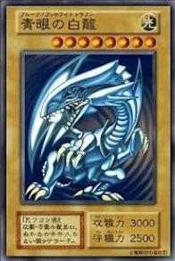

rafael@portfolio:~$ ~$|
Homenagem interativa e moderna a um dos maiores RPGs de todos os tempos. Esta não é apenas uma aplicação, mas uma celebração da arte, da música e da nostalgia do game.
Ver Repositório / Ver SiteVocê acaba de adentrar em uma arena onde a estratégia ancestral do Jo-Ken-Po (Pedra, Papel e Tesoura) se funde com o poder dos Monstros de Duelo de Yu-Gi-Oh!.
Ver Repositório / Ver SiteUma enciclopédia interativa para os amantes de videogames, onde você pode encontrar informações sobre seus consoles favoritos de forma rápida e fácil.
Ver Repositório / Ver SiteEste projeto é uma landing page de One Piece. Utilizando técnicas avançadas de manipulação de DOM para alternar entre personagens.
Ver Repositório / Ver SitePrefeitura de São Caetano do Sul - SP / SEEDUC
Auxiliar na manutenção e suporte básico de equipamentos de informática, redes e sistemas; apoiar usuários na utilização de sistemas, softwares e recursos tecnológicos institucionais.
Digital Innovation One (DIO)
O Campus Expert é o programa de embaixadores universitários da DIO que acelera o nosso desenvolvimento em Liderança e nas Soft Skills (Habilidades Comporamentais) mais valorizadas pelo mercado tech. Uma rede poderosa de Networking!
Profissional Autônomo
Manutenção preventiva e corretiva dos mais diversos tipos de equipamentos eletrônicos, como: videogames, computadores, notebooks, Tvs, Smartphones e Tablets.
UniCesumar
Capacitação para criar soluções inovadoras utilizando IA e Aprendizado de Máquina, com ênfase em algoritmos complexos e fundamentos teóricos. Preparação completa para atuar como agente de transformação digital e inovação em diversos setores da indústria.
FAT
Capacitação técnica no ciclo completo de desenvolvimento para Web e Mobile: do planejamento e banco de dados à codificação (Front-end e Back-end) e testes. O curso desenvolve competências para criar interfaces, documentar projetos e realizar a manutenção de aplicações com visão estratégica.
IFNMG Polo CEADI - Montes Claros
Capacitação técnica com o objetivo de criado para formar profissionais para desenvolver e implementar modelos de aprendizado de máquina, aplicar técnicas de ciência de dados, programação em Python, visão computacional e processamento de linguagem natural, além de integrar essas tecnologias.
FAT
Capacitação completa no ciclo de vida de software: do levantamento de requisitos e modelagem à codificação, testes e manutenção. Desenvolvimento de soluções computacionais estratégicas, elaboração de documentação técnica e suporte, utilizando diversas linguagens e ambientes de desenvolvimento.
ETEC Lauro Gomes
Capacitar o aluno para planejar, executar e avaliar serviços e instalação, operação e manutenção de sistemas eletroeletrônicos, compondo equipes de trabalho, aplicando normas e padrões técnicos nacionais e internacionais, utilizando instrumentos, ferramentas e recursos de informática.
Sistemas online. Aguardando ping...
